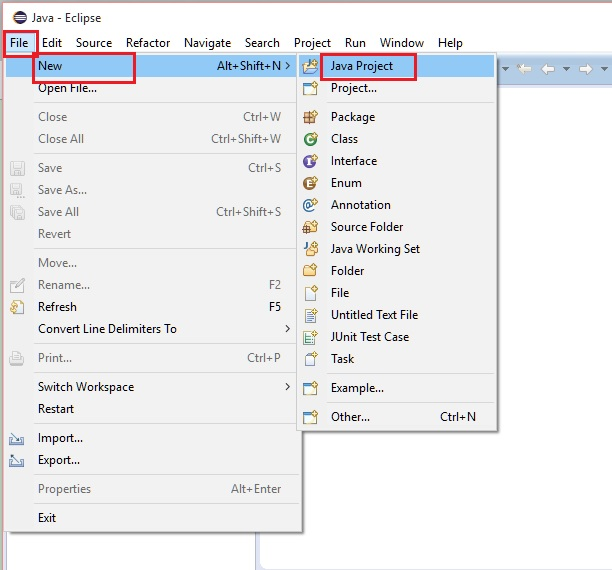
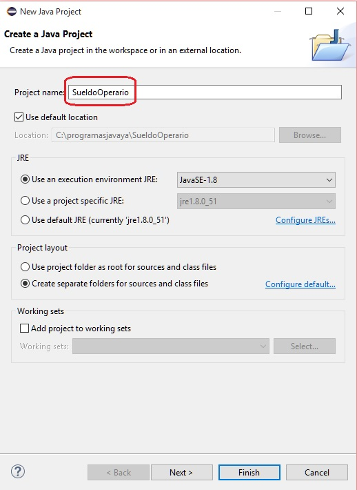
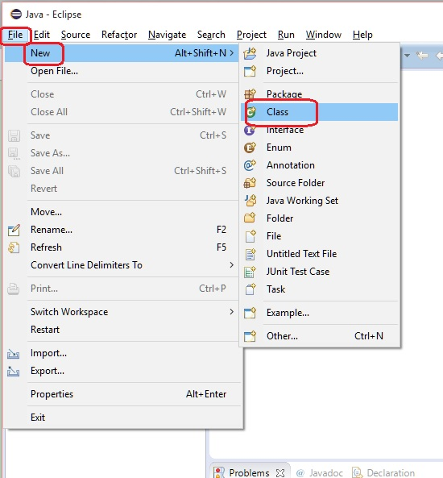
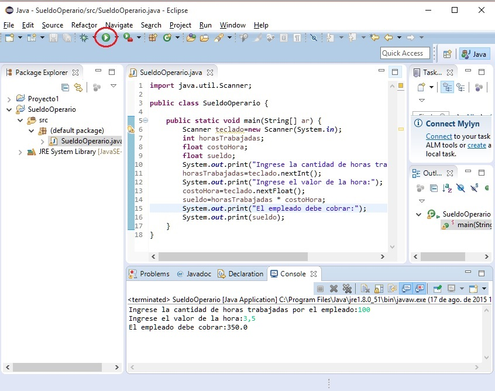
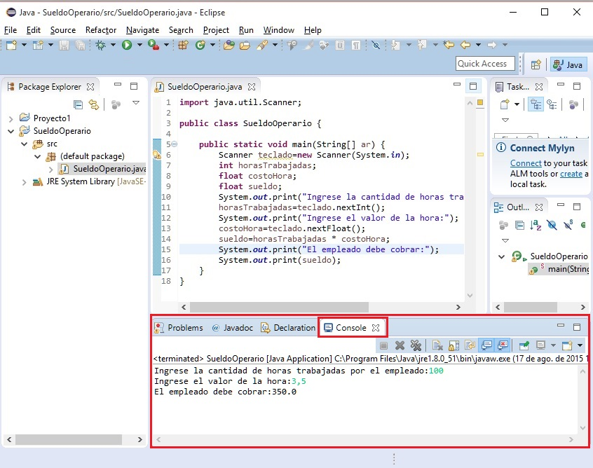
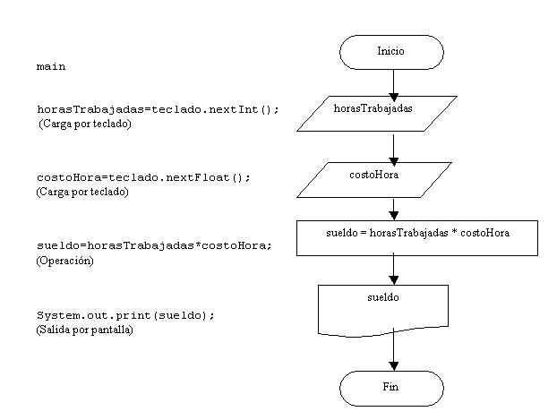

El curso está ideado para ser desarrollado por una persona que no conoce nada de programación y se utilice Java como primer lenguaje.
El objetivo fundamental de este tutorial es permitir que el estudiante pueda resolver problemas de distinta índole (matemáticos, administrativos, gráficos, contables etc.) empleando como herramienta la computadora.
Hay que tener en cuenta que para llegar a ser programador se debe recorrer un largo camino donde cada tema es fundamental para conceptos futuros. Es importante no dejar temas sin entender y relacionar.
La programación a diferencia de otras materias como podría ser la historia requiere un estudio metódico y ordenado (en historia se puede estudiar la edad media sin tener grandes conocimientos de la edad antigua)
La programación es una actividad nueva para el estudiante, no hay en los estudios primarios y secundarios una materia parecida.
Es bueno tenerse paciencia cuando los problemas no se resuelven por completo, pero es de fundamental importancia dedicar tiempo al análisis individual de los problemas.
Qué es un programa?
Programa: Conjunto de instrucciones que entiende un ordenador para realizar una actividad.
Todo programa tiene un objetivo bien definido: un procesador de texto es un programa que permite cargar, modificar e imprimir textos, un programa de ajedrez permite jugar al ajedrez contra el ordenador u otro contrincante humano.
La actividad fundamental del programador es resolver problemas empleando el ordenador como herramienta fundamental.
Para la resolución de un problema hay que plantear un algoritmo.
Algoritmo: Son los pasos a seguir para resolver un problema.
Diagrama de flujo
Un diagrama de flujo es la representación gráfica de un ALGORITMO.
Los símbolos gráficos a utilizar para el planteo de diagramas de flujo son:

Estos son los elementos esenciales que intervienen en el desarrollo de un diagrama de flujo.
Planteo de un problema utilizando diagramas de flujo.
Para plantear un diagrama de flujo debemos tener muy en claro el problema a resolver.
Ejemplo : Calcular el sueldo mensual de un operario conociendo la cantidad de horas trabajadas y el pago por hora.
Podemos identificar:
Datos conocidos:
Horas trabajadas en el mes.
Pago por hora.
Proceso:
Cálculo del sueldo multiplicando la cantidad de horas por el pago por hora.
Información resultante:
Sueldo mensual.
Si hacemos un análisis todo problema está constituido por:
- Datos conocidos: Datos con los que se cuenta al plantear el problema.
- Proceso: Operaciones a realizar con los datos conocidos.
- Información resultante: Es la información que resuelve el problema.
Esta forma de expresar un problema identificando sus datos conocidos, procesos e información resultante puede llegar a ser engorrosa para problemas complejos donde hay muchos datos conocidos y procesos. Es por eso que resulta mucho más efectivo representar los pasos para la resolución del problema mediante un diagrama de flujo.

Resulta mucho más fácil entender un gráfico que un texto.
El diagrama de flujo nos identifica claramente los datos de entrada, operaciones y datos de salida.
En el ejemplo tenemos dos datos de entrada: horasTrabajadas y costoHora, a las entradas las representamos con un paralelogramo y hacemos un paralelogramo por cada dato de entrada.
La operación se representa con un rectángulo, debemos hacer un rectángulo por cada operación.
A la salida la representamos con la hoja rota.
El diagrama de flujo nos da una idea del orden de ejecución de las actividades en el tiempo. Primero cargamos los datos de entrada, luego hacemos las operaciones necesarias y por último mostramos los resultados.
Codificación del problema con el lenguaje Java.
No debemos perder de vista que el fin último es realizar un programa de computación que permita automatizar una actividad para que muchos procesos sean desarrollados por la computadora.
El diagrama de flujo es un paso intermedio para poder ser interpretado por la computadora.
El paso siguiente es la codificación del diagrama de flujo en un lenguaje de computación, en nuestro caso emplearemos el lenguaje Java.
Lenguaje de computación: Conjunto de instrucciones que son interpretadas por una computadora para realizar operaciones, mostrar datos por pantalla, sacar listados por impresora, entrar datos por teclado, etc.
Conceptos básicos para codificar un programa.
Variable: Es un depósito donde hay un valor. Consta de un nombre y pertenece a un tipo.
Para el ejemplo planteado la variable horasTrabajadas almacena la cantidad de horas trabajadas por el operario. La variable valorHora almacena el precio de una hora de trabajo. La variable sueldo almacena el sueldo a abonar al operario.
En el ejemplo tenemos tres variables.
Tipos de variable:
Una variable puede almacenar:
- Valores Enteros (100, 260, etc.)
- Valores Reales (1.24, 2.90, 5.00, etc.)
- Cadenas de caracteres ("Juan", "Compras", "Listado", etc.)
Elección del nombre de una variable:
Debemos elegir nombres de variables representativas. En el ejemplo el nombre horasTrabajadas es lo suficientemente claro para darnos una idea acabada sobre su contenido. Podemos darle otros buenos nombres. Otros no son tan representativos, por ejemplo hTr. Posiblemente cuando estemos resolviendo un problema dicho nombre nos recuerde que almacenamos las horas trabajadas por el operario pero cuando pase el tiempo y leamos el diagrama probablemente no recordemos ni entendamos qué significa hTr.
Consideraciones a tener en cuenta en cada proyecto.
Hay que tener en cuenta que el entorno de programación "Eclipse" no a sido desarrollado pensando en un principiante de la programación. Lo mismo ocurre con el propio lenguaje Java, es decir su origen no tiene como principio el aprendizaje de la programación. Debido a estos dos puntos veremos que a medida que avanzamos con el tutorial muchos conceptos que iremos dejando pendientes se irán aclarando.
Codificaremos el problema propuesto para repasar los pasos para la creación de un proyecto en Eclipse, creación de la clase principal, definición de la función main y el posterior desarrollo del algoritmo del problema.
Pasos.
1 - Creación del proyecto (tema visto anteriormente). Podemos asignarle como nombre: SueldoOperario (normalmente uno busca un nombre representativo al programa que desarrolla)


2 - Creación de la clase. Definiremos como nombre el mismo que le asignamos al proyecto (esto no es obligatorio como veremos más adelante un proyecto puede contener varias clases)
Es decir disponemos como nombre de la clase: SueldoOperario.

Inicializamos el campo que solicita el "Name" con "SueldoOperario".
3 - Codificamos el algoritmo en la clase:SueldoOperario.
import java.util.Scanner;
public class SueldoOperario {
public static void main(String[] ar) {
Scanner teclado=new Scanner(System.in);
int horasTrabajadas;
float costoHora;
float sueldo;
System.out.print("Ingrese la cantidad de horas trabajadas por el empleado:");
horasTrabajadas=teclado.nextInt();
System.out.print("Ingrese el valor de la hora:");
costoHora=teclado.nextFloat();
sueldo=horasTrabajadas * costoHora;
System.out.print("El empleado debe cobrar:");
System.out.print(sueldo);
}
}
4 - Ejecutamos el programa:

5 - Si no hay errores sintácticos procedemos a activar la ventana de la "Console" con el mouse y cargamos por teclado los dos datos que se solicitan (la cantidad de horas trabajadas y el precio de la hora):

Estos cinco pasos fundamentales debemos llevar a cabo cada vez que desarrollemos un nuevo programa en Java.
Explicación.
Ahora veremos una explicación de varias partes de nuestro programa y otras partes quedarán pendientes para más adelante ya que en este momento difícilmente se entiendan.
Conceptos que quedarán pendientes para explicar:
-
Concepto de una clase. Veremos más adelante que en Java todo debe estar contenido en clases, por lo que hasta el problema más elemental debe estar contenido en una clase. Para declarar una clase utilizamos la sintaxis:
public class SueldoOperario { }El nombre de la clase no puede tener espacios en blanco, comienza con una letra mayúscula y en caso de estar constituida por dos o más palabras el primer caracter va en mayúsculas, no puede empezar con un número, pero si puede llevar números a partir del segundo caracter. Toda clase debe tener una llave de apertura y una llave de cierre. -
Todo programa constituido por una única clase debe tener definida la función main:
public static void main(String[] ar) { }La función main es la primera que se ejecuta y debe llevar la sintaxis indicada anteriormente (más adelante veremos que significa el parámetro ar, las palabras claves public, static y void. La función main tiene una llave de apertura y una llave de cierre (similar a la clase). La función main debe estar contenida en la clase. -
Cuando se requieren utilizar otras clases debemos importarlas previo a la declaración de la clase (en nuestro problema utilizamos la clase Scanner que se encuentra en el paquete java.util por lo que la importamos con la siguiente sintaxis:
import java.util.Scanner;
En la main creamos un objeto de la clase Scanner que nos permitirá ingresar por teclado los valores:
Scanner teclado=new Scanner(System.in);
Conceptos que deben quedar claros:
-
Por el momento haremos todo el algoritmo dentro de la función main. Es decir el resto siempre será lo mismo (declarar un proyecto, declarar una clase, definir una función main)
-
Si observamos el diagrama de flujos vemos que debemos definir tres variables: (horasTrabajadas, costoHora,sueldo), aquí es donde debemos definir que tipos de datos se almacenarán en las mismas. La cantidad de horas normalmente será un valor entero (ej. 100 - 150 - 230 etc.), pero el costo de la hora es muy común que sea un valor real (ej. 5,35 - 7,50 etc.) y como el sueldo resulta de multiplicar las horas trabajadas por el costo por hora el mismo deberá ser real.
La definición de las variables la hacemos en la main:
int horasTrabajadas; float costoHora; float sueldo;Utilizamos la palabra clave int para definir variables enteras (en Java las palabras claves deben ir obligatoriamente en minúsculas, sino se produce un error sintáctico) Luego de la palabra clave debemos indicar el nombre de la variable, por ejemplo: horasTrabajadas (se propone que el nombre de la variable comience con minúsculas y en caso de estar constituida por dos palabras o más a partir de la segunda palabra el primer caracter se especifique con mayúsculas (un nombre de variable no puede tener espacios en blanco, empezar con un número, ni tampoco utilizar caracteres especiales)
Debemos buscar siempre nombres de variables que nos indiquen que almacenan (no es conveniente llamar a nombres de variables con letras individuales) -
Para mostrar mensajes en la "Console" utilizamos la siguiente sintaxis:
System.out.print("Ingrese la cantidad de horas trabajadas por el empleado:");Con esta sintaxis todo lo que se encuentra contenido entre comillas aparecerá exactamente en la ventana de la "Console".
Si disponemos una variable:
System.out.print(sueldo);Aparecerá el contenido de la variable. Es decir el valor almacenado en la variable sueldo y no el mensaje "sueldo".
-
Para hacer la entrada de datos por teclado en Java se complica. Utilizaremos una clase llamada Scanner que nos facilita el ingreso de datos. Por eso tuvimos que importar la clase Scanner que se encuentra en el paquete java.util en la primer línea de nuestro programa.
En la función main debemos crear un objeto de la clase Scanner con la siguiente sintaxis:
Scanner teclado=new Scanner(System.in);Luego para cargar valores enteros por teclado debemos implementar la siguiente sintaxis:
horasTrabajadas=teclado.nextInt();Pero si el dato a cargar se trata de un valor float luego debemos utilizar la siguiente sintaxis:
costoHora=teclado.nextFloat(); -
Las operaciones que indicamos en el diagrama de flujo mediante la figura rectángulo la codificamos tal cual:
sueldo=horasTrabajadas * costoHora;
Podemos ver una relación entre las instrucciones que debemos utilizar para cada símbolo del diagrama de flujo:

En el diagrama de flujo no indicamos la definición de variables:
int horasTrabajadas;
float costoHora;
float sueldo;
No indicamos la creación del objeto de la clase Scanner:
Scanner teclado=new Scanner(System.in);
No representamos con símbolos los mensajes a mostrar previo a la carga de datos por teclado:
System.out.print("Ingrese la cantidad de horas trabajadas por el empleado:");
Como hemos visto hasta ahora hay muchas partes de nuestro código que no entendemos pero son indispensables para la implementación de nuestros programas, a medida que avancemos con el curso muchos de estos conceptos se irán aclarando.